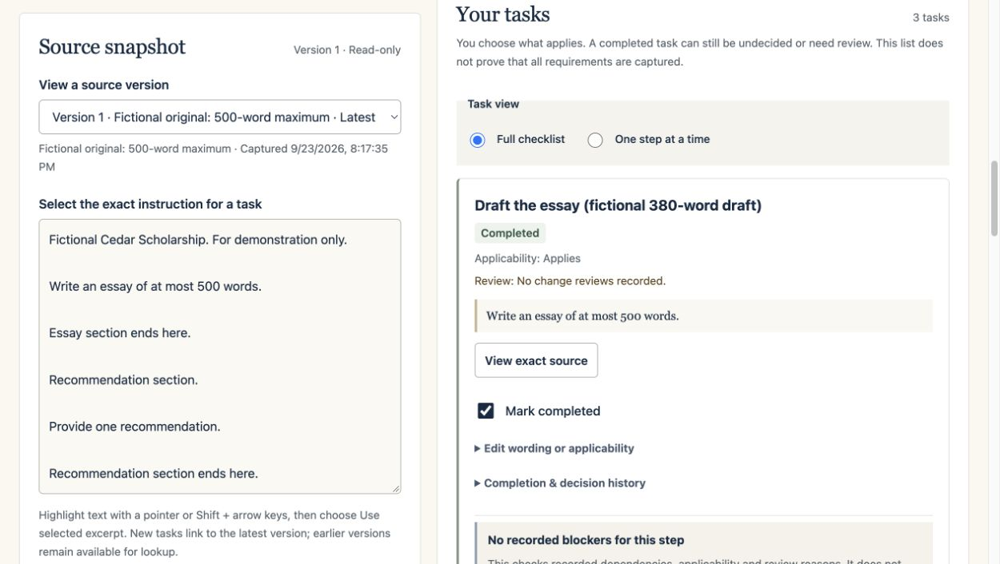

Keep the original in reach
Return to the exact passage behind a task, including an earlier version of the instructions.
A THOUGHTFUL START TO WHAT COMES NEXT
Turn scholarship instructions into a plan you can trace. When instructions change, see what deserves another look.
See how it worksNo sign-up. Start with a fictional example.

Every source stays intact
Completion history stays with you
You make the decisions
FROM A LONG BRIEF TO A CLEARER PLAN
Begin with the instructions you have. Build a checklist that remembers where each step came from.
Paste instructions or open a plain-text file. Keep an exact, read-only copy you can revisit.
Select a passage and write your next step. Link related work, like drafting and proofreading.
Add revised instructions. Compare the text and review affected tasks without losing completed work.
TRY THE WORKING EXAMPLE
The fictional Cedar plan already has a completed 380-word draft, proofreading, and a recommendation. Add its sample update to see why the essay and proofreading need review.
The recommendation stays complete. A review flag asks you to check; it does not declare the essay invalid.
Explore the fictional plan“Completed” and
“needs review”
can both be true.
Keep the work you’ve done.
Decide what happens next.
BUILT AROUND YOUR JUDGMENT
Origin Scholar organizes the preparation. You decide what applies, resolve uncertainty, and choose when a task is ready.
Return to the exact passage behind a task, including an earlier version of the instructions.
Work saves in this browser. Export a JSON backup and preview it before restoring. Browser storage is not a backup or encryption.
No app account, analytics, or application-text upload. The host still receives page requests. Use fictional information in this alpha.
START SMALL. STAY CONNECTED.
Free fictional alpha · No account required
Origin Scholar was previously called StepTrace. The workflow has engineering checks; human evaluation is still pending. It does not decide eligibility, guarantee a complete checklist, or submit applications.
Read the source & evaluation notes